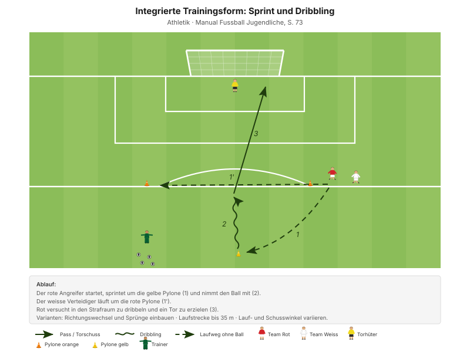
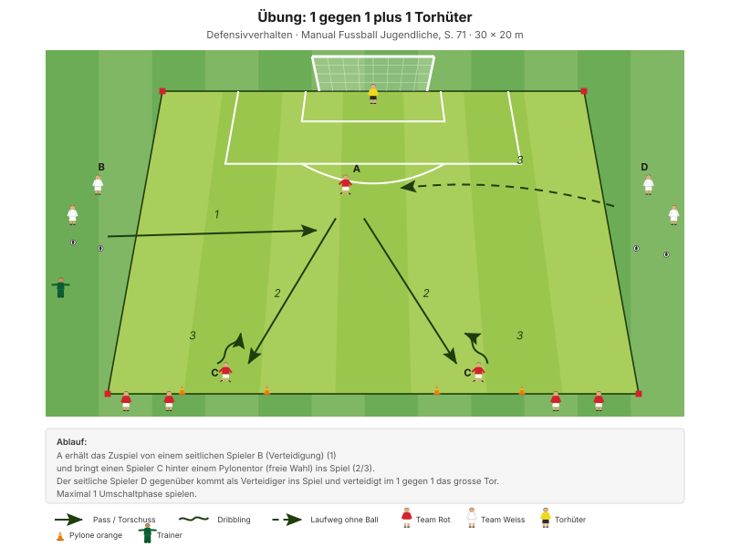
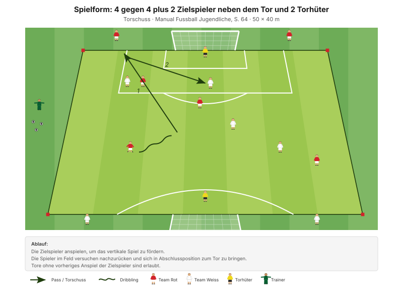

Der Ball ist erobert – und jetzt? Die drei Sekunden danach entscheiden, ob aus der Eroberung ein Angriff wird oder nur ein neuer Ballverlust. Heute endet jede Eroberung mit einem Abschluss.
"Torchancen variantenreich vorbereiten und erfolgreich abschliessen" Erscheinungsform B2, Manual Fussball Jugendliche, S. 57
Die Regel des Abends: Der erste Kontakt nach der Eroberung geht nach vorne. Nicht quer, nicht zurück – ausser der Weg nach vorne ist wirklich zu. Und das ist er seltener, als die Junioren denken.
Zur Quellenlage: Das Manual hat für die Umschaltphasen kein eigenes Good-Practice-Kapitel. Die Formen stammen deshalb aus den beiden Hauptphasen – ausgewählt wurden diejenigen, die das Manual ausdrücklich mit einer Umschaltphase oder einem Rollentausch beschreibt.
Das Manual fragt in den Entwicklungsfragen ausdrücklich "Wer kommuniziert wann, was, wie?", beantwortet es aber nicht. Für D-Junioren reichen drei feste Kommandos:
Diese drei Rufe stehen so nicht in den J+S-Unterlagen – sie sind eine eigene Ergänzung. Aus allgemeinem Fussballwissen: mehr als drei Kommandos merkt sich ein D-Junior im Spiel nicht.
| Zeit | Min | Teil | Inhalt |
|---|---|---|---|
| 0–4 | 4 | Besammlung | Thema ansagen, Gruppen einteilen |
| 4–16 | 12 | E1 | Passspiel mit Abschluss auf Minitore · Big 4 zwischen den Wiederholungen |
| 16–22 | 6 | E2 | 4 gegen 4 plus Joker auf 4 Minitore |
| 22–30 | 8 | E3 | Sprint und Torschuss (Explosivität) |
| 30–45 | 15 | H1 | 1 gegen 1 plus 1 Torhüter · eine Umschaltphase |
| 45–48 | 3 | Pause | Trinken, Umbau |
| 48–70 | 22 | H2 | 4 gegen 4 plus 2 Zielspieler und 2 Torhüter |
| 70–82 | 12 | Abschluss | Freies Spiel 5 gegen 5 plus 2 Torhüter |
| 82–90 | 8 | Ausklang | Cool-down, zwei Entwicklungsfragen, Verabschiedung |
| Total | 90 |
Einstieg 26 · Hauptteil 37 · Abschluss 20 Min. – nach dem Trainingsschema des Manuals (S. 43).
Nur einmal umbauen: Die vier Minitore des Einstiegs bleiben für E2 stehen. In der Pause kommen die grossen Tore und die Zielspieler-Zonen dazu.
Eigene Skizze · Platzaufteilung
Nur einmal aufbauen – das Einstiegsfeld liegt im späteren Spielfeld.
12 Minuten · 3 Teams à 4 · alle 12 Spieler
Eigene Skizze · Passspiel mit Abschluss auf Minitore
3 Wiederholungen à 1'30''–2' – zwischen den Wiederholungen je zwei Präventionsübungen.
"Mit dem 1. Ballkontakt die Folgeaktion (Torschuss) vorbereiten – scharf und präzise abschliessen" SFV-Lernbaustein "Einstieg TE: Torschuss 02", Phase 1
Je zwei Übungen zwischen den Wiederholungen, 25 Sekunden pro Übung:
| Bereich | Übung | Worauf achten |
|---|---|---|
| Fussgelenk | Einbeinsprünge vorwärts | Bei der Landung knickt das Knie nicht ein, Blick nach vorne. |
| Knie | Miniband Side Steps | Miniband immer unter Spannung halten. |
| Hüfte | Brücke | Knie hüftbreit, Oberschenkel in einer Linie mit dem Körper. |
| Hamstrings | Dynamische Standwaage | Standbein leicht gebeugt, anderes Bein und Oberkörper waagerecht. |
"Arbeit mit Zeitvorgaben – nicht mit Anzahl Wiederholungen." Prinzip Körperstabilität, Manual Fussball Jugendliche, S. 75
Zwei Punkte pro Übung nennen, nicht mehr. Qualität vor Tempo.
6 Minuten · gleiches Feld · 3 Wiederholungen à 1'30''–2'
"Mit dem 1. Ballkontakt die Folgeaktion (Torschuss) vorbereiten – scharf und präzise abschliessen" SFV-Lernbaustein "Einstieg TE: Torschuss 02", Phase 2
Vier Tore in alle Richtungen heisst: Nach der Eroberung ist immer ein Ziel in der Nähe. Genau das soll sich einprägen – nach vorne ist fast nie ganz zu.
8 Minuten · 2 Bahnen · Paare bilden
Manual-Vorlage · Diagramm 46 "Sprint und Dribbling" (S. 73)

Heute mit Abschluss am Ende der Strecke.
| Parameter | Vorgabe |
|---|---|
| Distanz | 15–30 m |
| Wiederholungen | 3 |
| Pause zwischen Wiederholungen | 1/15 (Belastung × 15) |
| Serien | 3 |
| Pause zwischen Serien | 1'30''–2' |
"Erholungszeit: 10- bis 20-fache Dauer der Belastungszeit, abhängig von der Laufdistanz. Vollständig erholen zwischen den Wiederholungen." Prinzipien Explosivität, Manual Fussball Jugendliche, S. 72
15 Minuten · 30 × 20 m · alle 12 in Rotation
Manual-Vorlage · Diagramm 42 "1 gegen 1 plus 1 Torhüter" (S. 71)

Wie in D-1 – dort aus Sicht des Verteidigers, heute aus Sicht dessen, der den Ball gerade erobert hat.
"Maximal 1 Umschaltphase spielen." Übung, Manual Fussball Jugendliche, S. 71 (Diagramm 42) · 30 × 20 Meter
Die eine erlaubte Umschaltphase ist der ganze Punkt: Wer den Ball erobert, hat genau einen Versuch. Es gibt kein Zurücklegen und Neuaufbauen. Das entspricht der Realität nach einer Eroberung im eigenen Drittel.
22 Minuten · 40 × 32 m · alle 12 Spieler
Manual-Vorlage · Diagramm 24 "4 gegen 4 plus 2 Zielspieler neben dem Tor und 2 Torhüter" (S. 64)

4 + 4 + 2 + 2 = genau 12. Passt ohne Anpassung auf den Kader.
Die Zielspieler neben dem Tor sind nach einer Eroberung sofort anspielbar – sie stehen schon dort, wo es gefährlich wird. Damit hat jeder Ballgewinn eine unmittelbare Fortsetzung, und die Fünf-Sekunden-Wertung belohnt genau die, die sie sehen.
12 Minuten · gleiches Feld, kein Umbau
Keine Auflagen, keine Bonusregeln. Hier wird sichtbar, was von den 70 Minuten davor hängen geblieben ist.
8 Minuten · Cool-down im Gehen, dann Kreis in der Mitte
Zuerst 3–4 Minuten lockeres Auslaufen und Mobilität, dann der Kreis. Zwei Fragen – die Antworten kommen von den Spielern, nicht vom Trainer:
"Habt ihr die gegnerischen Angriffe erfolgreich unterbunden? Wenn nein, welches Prinzip habt ihr vernachlässigt? Was müsst ihr verbessern (individuell/als Gruppe)?"
"Hast du kommuniziert? Wie kommunizierst du noch besser? Wer kommuniziert wann, was, wie?" Entwicklungsfragen zur Spielphase "Wir haben den Ball nicht", Manual Fussball Jugendliche, S. 69
Zusätzlich, falls Zeit bleibt: "Hat dir der 1. Ballkontakt jeweils eine optimale Folgeaktion ermöglicht?" (S. 60)
Material aufräumen – laut Teamregel Respekt Teamarbeit, nicht Strafe.
| Teil | Vorlage | Seite |
|---|---|---|
| E1 – E3 | SFV-Lernbaustein "Einstieg TE: Torschuss 02", Phasen 1–3 | – |
| E3 | Integrierte Trainingsform "Sprint und Dribbling" (Diagramm 46) | 73 |
| H1 | Übung "1 gegen 1 plus 1 Torhüter" (Diagramm 42) | 71 |
| H2 | Spielform "4 gegen 4 plus 2 Zielspieler und 2 Torhüter" (Diagramm 24) | 64 |
| Ziele "1. Ballkontakt und Torschuss" | Kapitelkopf | 64 |
| Fünf-Sekunden-Wertung, die drei Rufe | Eigene Ergänzung | – |
| Explosivität, Körperstabilität | Athletik und Gesundheit | 72, 75 |
| Trainingsaufbau | Trainingsschema (Abb. 19) | 43–45 |
Alle Seitenangaben beziehen sich auf das J+S Manual Fussball Jugendliche (BASPO/SFV, 2022). Spielerzahlen und Feldmasse sind auf einen Kader von 12 Spielern angepasst. Dieser Trainingsplan wurde mit Unterstützung von KI (Claude, Anthropic) erstellt.